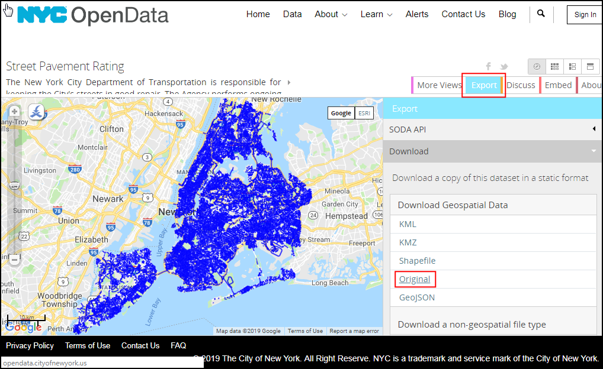
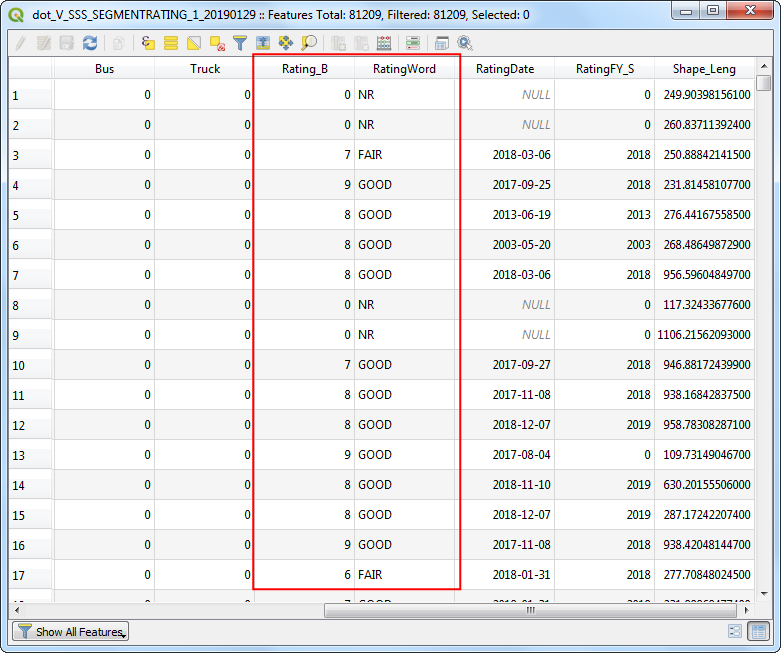

Ujaval Gandhi
Ujaval Gandhiاجرای اتصال مکانی (QGIS3)¶
اتصال مکانی Join Spatial - انتقال ستون (فیلد) از یک لایه به لایه دیگر بر اساس رابطه فضایی آنها یک مسئله GIS کلاسیک است در QGIS ، این قابلیت از طریق برنامه پردازش "اتصال مکانی " Join attributes by location` در دسترس است.
نمای کلی تمرین¶
ما از 2 لایه یک فایل لایه برداری مرزهای اداری شهر نیویورک و یک فایل دیگر از لایه برداری خیابان های شهر نیویورک استفاده خواهیم کرد. اولین کار محاسبه میانگین رتبه بندی خیابان ها در هر یک از بخش های شهر با استفاده از برنامه خلاصه سازی مکانی است. دومین کار افزودن نام منطقه به عارضه خیابان از طریق اتصال مکانی یک به چند خواهد بود.
مهارت های دیگری که خواهید آموخت¶
ایجاد فیلترها برای حذف موقت برخی از عاراضه ها از محاسبه.
اخذ داده¶
`پر تال داده NYC Open Data Portal <https://data.cityofnewyork.us/>`_یک منبع اطلاعات مفید برای شهر نیویورک است.
مرز اداری شهر e Borough Boundaries بصورت فایل زیپ با استفاده از Export دانلود کنید.

داده رتبه بندی Street Pavement Rating بصورت فایل زیپ با استفاده از Export دانلود کنید.
برای راحتی کار ، می توانید مستقیماً یک کپی از مجموعه داده ها را از پیوندهای زیر بارگیری کنید:
Data Source [CITYOFNY]
مراحل¶
فایل
nybb_19a.zipرا درمرورگر QGIS Browser پیدا کرده و آن را باز کنید. لایه``nybb_19a/nybb.shp`` nybb_19a / nybb.shp" را انتخاب کنید و آن را به پنجره اصلی نمایش نقشه بکشید. این یک لایه چند ضلعی است که مرزهای منطقه را در شهر نیویورک نشان می دهد.

بعد ، فایل V_SSS_SEGMENTRATING_1.zip` را پیدا کرده و آن را باز کنید. لایه
dot_V_SSS_SEGMENTRATING_1_20190129.shpرا انتخاب کرده و به پنجره اصلی نمایش نقشه اضافه کنید. این یک لایه خطوط خیابانهای شهر است.

بیایید ستونهای موجود هر عارضه در لایه
dot_V_SSS_SEGMENTRATING_1_20190129را بررسی کنیم. کلیک راست کرده و برای نمایش جدول توصیفی، گزینه Open Attribute Table را انتخاب کنید.

ستونی به نام Rating_B` را مشاهده خواهید کرد که مقادیر آن در محدوده 0-10 نشان دهنده رتبه بندی بخش خیابان است. ستون
RatingWordدارای رتبه بندی توصیفی است. برای محاسبه میانگین رتبه می توانیم از قسمت``Rating_B`` استفاده کنیم.

ممکن است متوجه شده باشید که برخی از عراضه ها دارای درجه بندی "NR" هستند. اینها بخشهایی هستند که رتبه بندی نشده اند. گنجاندن آنها در تحلیل ما درست نخواهد بود. قبل از اتصال مکانی، اجازه دهید ** فیلتر ** Filter تنظیم کنیم تا این سوابق را حذف کند. روی لایه
dot_V_SSS_SEGMENTRATING_1_20190129راست کلیک کرده و گزینه Filter را انتخاب کنید.

در عبارت Query Builder، عبارت زیر را تایپ کنید تا تمام رکوردهایی با ارزش" NR "رتبه بندی نشده را انتخاب کنید. همچنین می توانید با کلیک بر روی Field، Operator و انتخاب Value یک ارزش مناسب انجام دهید. بر دکمه :guilabel:`OK`کلیک کنید.
"RatingWord" != 'NR'
متوجه خواهید شد که لایه``dot_V_SSS_SEGMENTRATING_1_20190129`` اکنون دارای یک نماد فیلتر است که نشان می دهد یک فیلتر فعال روی این لایه اعمال شده است. اکنون می توانیم با استفاده از این لایه یک اتصال مکانی انجام دهیم. به منوی برویید.

در قسمت فیلتر عبارت Join جستجو نمایید یا به قسمت بردار رفته ابزار اتصال مکانی از منوی algorithm راپیدا نمایید. Join attribute by location (summary )را جستجو و پیدا کنید. برای راه اندازی آن، دوبار روی آن کلیک کنید.

در کادر "اتصال خصوصیات براساس مکان (خلاصه گیری)" Join attribute by location (summary) ، "nybb"، لایه
nybbرا به عنوان"لایه ورودی" Input layer انتخاب کنید. لایه خیابانdot_V_SSS_SEGMENTRATING_1_20190129به عنوان لایه اتصال Join layer انتخاب کنید. می توانید پیش بینی هندسی Geometry predicate را به حالت پیش فرض گزینه "اشتراک" ``Intersects``بگذارید. روی دکمه:guilabel:... در کنار Fields to sumarize. کلیک کنید.

توجه
نکته ای برای کمک به شما در انتخاب صحیح لایه های ورودی و اتصال: لایه ورودی لایه ای است که با ستون های جدید در اتصال مکانی اصلاح می شود. همانطور که می خواهیم فیلد درجه بندی متوسط به لایه اداری اضافه شود ، این همان لایه ورودی خواهد بود.
Select
Rating_Band click OK.

مثل قبل، بر دکمه ... در کنار Summaries to calculate. کلیک نمایید .

دستور میانگیری
meanرا به عنوان عملگر خلاصه انتخاب کنید و روی دکمه OK`کلیک کنید. اکنون ما آماده شروع پردازش هستیم. با کلیک بر دکمه :guilabel:`Run آن را اجرا کنید.

الگوریتم پردازش از طریق عراضه ها عمل می کند و اتصال مکانی را اعمال می کند. بررسی کنید که کار پردازش موفقیت آمیز بوده و بر دکمه guilabel:Close کلیک کنید تا بسته شود.

به پنجره اصلی QGIS باز می شوید ، یک لایه جدید "Joined layer" به پنجره اصلی نرم افزار اضافه می شود. جدول توصیفی این لایه را باز کنید. خواهید دید که ستون جدیدی با عنوان "Rating_B_mean" به لایه ورودی منطقه با میانگین گیری امتیاز کلیه خیابانهایی که با این لایه موردنظر اضافه می شود.

اکنون می توانیم یک عمل معکوس انجام دهیم. گاهی اوقات تجزیه و تحلیل شما مستلزم گرفتن ستون های از لایه دیگر بر اساس رابطه مکانی است اما هیچ خلاصه ای را محاسبه نمی کند. برای چنین تجزیه و تحلیل می توانیم از برنامه
Join attribute by locationاستفاده کنیم. وظیفه این است که نام منطقه را به هر عارضه در لایه خیابانها اضافه کنید که بر اساس آن با چند ضلعی بخش متصل می شود. قبل از اجرای این الگوریتم ، اجازه دهید فیلتر را از لایهdot_V_SSS_SEGMENTRATING_1_20190129حذف کنیم. روی نماد فیلتر کلیک کنید و Clear را در: guilabel: "Query Builder" فشار دهید. بر دکمه OK کلیک کنید.

Turn of the
Joined layerin the Layers panel. Find the algorithm in the Processing Toolbox and double-click it to launch.

لایه
dot_V_SSS_SEGMENTRATING_1_20190129را به عنوان "لایه ورودی" Input layer و "nybb" را به عنوان لایه اتصال Join layer انتخاب کنید. می توانید گزینه Geometry predicate پیش بینی هندسی : guilabel: Geometry predict را به حالت پیش فرض اشتراک``Intersects``بگذارید. روی دکمه ... در کنار:guilabel:Fields to add کلیک کنید وBoroName. را انتخاب کنید. بر دکمه OK کلیک کنید.

خط ممکن است از یک محدوده مرز اداری عبور کند ، بنابراین ما Join type را به عنوان "عارضه جداگانه برای هر ویژگی واقع شده (یک به چند)"
Crate separate feature for each located feature (one-to-many)انتخاب می کنیم. بر Run.کلیک کنید تا اجرا شود.

پس از پایان پردازش ، جدول توصیفی "Joined layer" را که اخیراً اضافه شده است ، باز کنید. خواهید دید که ویژگی جدید "BoroName" به هر عارضه خیابان اضافه شده است.

If you want to give feedback or share your experience with this tutorial, please comment below. (requires GitHub account)